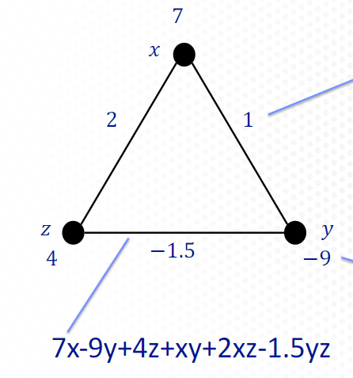
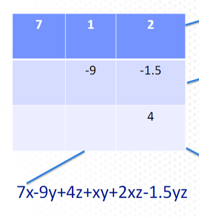
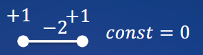
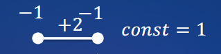
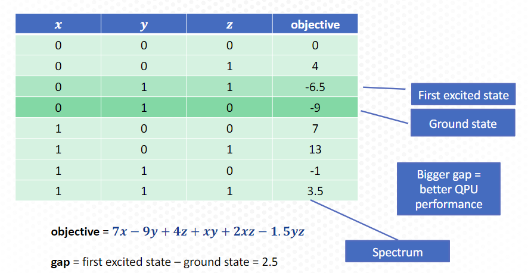
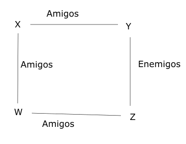

3. Introducción.#
La expresión QUBO significa Quadratic Unconstrained Binary Optimization. Es decir, se trataría de un modelo cuadrático sin restricciones (aunque ya veremos después que se pueden añadir) utilizado para la optimización de variables binarias (es decir variables que sólo pueden tomar dos valores, que serán el cero o el uno; o bien el -1 y el 1).
La tecnología que está detrás de todo esto, se basa en el comportamiento del electrón y el spin.El comportamiento magnético puede entenderse pensando en cada átomo como un espín, que puede apuntar hacia arriba o hacia abajo.
Los espines pueden querer alinearse contra o con un campo magnético, de tal manera que los giros vecinos se afectan mutuamente, pero no ocurre lo mismo con los más alejados.
3.1. El modelo ising.#
Este modelo va tratar las variables como binarias pero que pueden tomar los valores -1 y +1. Entonces utilizando este modelo la función objetivo se va a definir de la siguiente manera:
La variable se representa en este modelo por S ya que es la inicial de Spin.Los valores de h’s y J’s son constantes para ajustar por el modelo, una h para cada Spin y una J para cada interacción de los pares de Spines.
3.2. El modelo QUBO.#
En este caso el modelo se describe de la siguiente manera:
En este caso las variables q’s son variables de tipo qubit que valen 0 ó 1 en lugar de -1 ó 1
Para convertir una variable QUBO en Ising se utiliza la siguiente transformación:
Uno de los conceptos claves de esta tecnología es el D-Wave Quantum Processing Unit (QPU) que es el que se encaraga realmente de resolver los modelos Ising o QUBO . A este elemento se envían la QMI (Quantum Machine Instructions) para su procesamiento y entonces la QPU se encarga de localizar los estados de mínima energía es decir los valores de las variables donde se alcanza el mínimo de la función objetivo.
3.3. Representación gráfica de un problema QUBO.#
Los problemas de tipo QUBO se pueden representar mediante un esquema de tipo red. A continuación mostramos un ejemplo.

En la figura anterior podemos ver que en las aristas aparecen los términos cuadráticos y en los vértices los términos lineales. En concreto, en esta figura podemos ver la forma cuadrática que representa en la parte inferior de la misma.
Los términos constantes y los nombres de las variables son normalmente omitidos en este tipo de representación.
3.4. Representación en formato matricial.#
Una forma más común de representación de los problemas de tipo QUBO es mediante una matriz, de tal manera que en la diagonal se ponen los elementos de los términos lineales y en la parte superior los coeficiente de los términos cuadráticos. Veamos el ejemplo anterior, cómo se dispondrá en forma matricial.

En el siguiente problema
El término lineal será:
Mientras que el término cuadrático es
Y la expresión matricial será
Veamos cómo vamos a poder ir formalizando los problemas de tipo QUBO. Supongamos que disponemos de variables binaria (con valores 0 ó 1) y queremos favorecer valores iguales pero penalizar valores diferentes de las mismas. La expresión de la función objetivo sería:
Entonces de acuerdo a estas características podemos construir la siguiente tabla.
Las dos columnas de las izquierda representan las posibles combinaciones de los valoress de las dos variables, y la tercera columna el resultado de acuerdo con las premisa inicial, es decir se tendrá menos energía cuando los dos valores coincida y más energía cuando los valores sean diferentes.
Entonces sustituyendo los valores de las variables y haciéndolos igual a cero ( en la fórmula de la función objetivo se tiene).
De donde se obtiene
Es decir
Con una representación gráfica igual a la siguiente

Supongamos ahora un problema similar al anterior, pero por contra se penalizan los valores iguales y se favorecen los qubits con valores diferentes. Entonces en esta caso se tiene la siguiente matriz.
que daría lugar a las siguientes igualdades
De donde se obtiene
En consecuencia la ecuación quedaría de la siguiente manera
Y la expresión gráfica sería en este caso la siguiente:

Un posible ejemplo para tres qubit se puede ver en la imagen siguiente

Veamos a modo de ejemplo, como podemos pasar a los ordenadores de Q-Wave el problema anterior, que en resumidas cuentas es equivalente a no tener en cuenta la constante y tomar como función objetivo \(-x-y+2xy\). Entonces el programa en paython que escribiremos será el siguiente:
import dimod
exacsolver = dimod.ExactSolver()
Q={(0,0):-1,(1,1):-1,(0,1):2}
result = exacsolver.sample_qubo(Q)
#Sacamos los resultados
for sample, energy in result.data(['sample','energy']):
print(sample,energy)
{0: 1, 1: 0} -1.0
{0: 0, 1: 1} -1.0
{0: 0, 1: 0} 0.0
{0: 1, 1: 1} 0.0
Como vemos las soluciones óptima son aquellas en que las dos variables valen igual, es decir las dos cero o las dos 1
3.5. Planteamiento problemas en QUBO.#
En este apartado vamos a dar algunas ideas sobre cómo poder plantear los problemas en QUBO. Imaginemos que tenemos cuatro personas con una cierta relación de amistad o enemistad como se muestra en la siguiente figura.

Entonces de lo que se trata es obtener la una función objetivo de tal manera que nos represente perfectamente esa situación. Por lo tanto se deberán utilizar para ello variables binarias, que sólo tomen valores 1 ó 0.
La relación entre las dos persona X e Y y su expresión matemática la encontramos mediante la siguiente tabla
Que resolviendo como hemos hecho anteriormente nos lleva a la siguiente ecuación $\( X+Y-2XY-1 \)$
De forma análoga, para la relación Z con W obtenemos la siguiente ecuación
Y la relación de X con W se indicará de la siguiente manera
Veamos ahora cómo plasmar la relación de enemistad entre Z e Y.
Que resolviéndolo nos lleva a la siguiente expresión
Entonces sumando las cuatro expresiones obtenidas anteriormente obtendremos la función objetivo que vamos buscando: